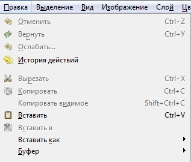
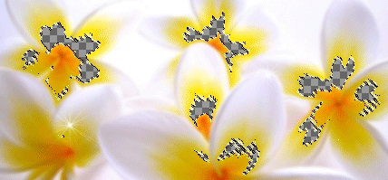
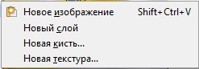

Инструменты выделения
Копирование и вставка элементов
GIMP использует стандартную схему: копирование — вставка. Для дублирования какого-либо элемента мы прежде всего должны его скопировать. Затем, вставляя элемент, мы работаем уже с его копией.
Копирование элемента
Выделить элемент - выпадающее меню Правка - Копировать
 Визуально ничего не изменяется: выделение осталось на месте, копируемый элемент — тоже. Для чего мы использовали функцию копирования? Дело в том, что сама по себе операция копирования никакого видимого эффекта производить не должна. Копируя какой-либо элемент, мы помещаем его в специальный буфер обмена, где он будет содержаться до тех пор, пока вы не скопируете какой-либо другой элемент. Буфер обмена — это своеобразное временное хранилище информации любого рода. Он является атрибутом операционной системы, а не программы GIMP. С его помощью можно обмениваться информацией между двумя разными файлами внутри одной программы, а также между разными программами.
Поместив выделенный элемент в буфер обмена, мы определяем, что именно он будет в дальнейшем вставлен при выполнении следующей операции. Используя функцию Копировать, мы лишь копируем выделенную область, не затрагивая при этом ее саму.
Вставка элементов
Выпадающее меню Правка - Вставить
После этого скопированный элемент вставляется в изображение, однако визуально это незаметно, так как он вставляется в ту же самую точку, в которой был скопирован. Фактически мы имеем два совершенно одинаковых элемента, места расположения которых совпадают на изображении. Выберите инструмент Перемещение и переместите выделенную область. Становится очевидно, что у нас два совершенно одинаковых элемента: первый остался на фоне, а второй — перемещается.
Обратите внимание на панель Слои.
Над слоем Фон появился новый слой под названием «Плавающее выделение». Такой плавающий слой появляется каждый раз при копировании — вставке. Плавающие слои временны и нужны лишь для того, чтобы определить место расположения содержащегося на них элемента на изображении.
Пока на панели Слои находится плавающий слой, работать с какими-либо другими слоями нельзя. Сначала необходимо закончить работу с этим слоем, т. е. определить место плавающего элемента и закрепить его. Для этого поместите с помощью инструмента Перемещение скопированный элемент в нужную точку изображения. Затем либо просто снимите выделение с помощью любого из инструментов выделения, либо нажмите кнопку Прикрепить плавающий слой в нижней части панели Слои.
После прикрепления плавающего слоя он автоматически пропадает, а скопированный элемент оказывается помещенным на слой, расположенный ниже (в нашем случае — слой Фон). Таким образом, мы вставили скопированный элемент в то же самое изображение, откуда он был скопирован.
Вырезать
Выделить элемент (регион) - Выпадающее меню Правка - Вырезать
Используется в случае, если определенный элемент необходимо не скопировать, а переместить, т. е. не оставлять его оригинала.
Выделенная область будет помещена в буфер обмена, а на ее месте останется лишь монотонная заливка. Теперь в выпадающем меню Правка выберите пункт Вставить. Определяем место расположения вставляемого региона и утверждаем плавающий слой.
Копировать видимое
Функция Копировать видимое позволяет скопировать изображение всех видимых слоев одновременно в выделенном регионе. Дело в том, что обыкновенная функция Копировать позволяет выделить лишь изображение текущего слоя. Если на панели Слои выделен прозрачный слой (пустой), то при копировании выделенного региона никакое изображение не будет помещено в буфер, даже если под этим пустым слоем находятся наполненные слои.
В случае же использования функции Копировать видимое будет скопировано содержимое всех видимых слоев одновременно в рамках выделенного региона. При дальнейшем использовании функции Вставить содержимое слоев будет вставлено как цельное изображение, как если бы предварительно вы использовали функцию Свести слои.
Вставить в
Функция Вставить в выпадающего меню Правка позволяет вставить скопированный элемент именно в текущее выделение. Соответственно, прежде чем использовать данную функцию, необходимо выделить какой-либо регион на изображении. Скопированный элемент будет вставлен именно в ту часть изображения, которую вы выделили. Инструментом Перемещение можно передвигать видимую часть вставленного элемента.
Вставить как
Вставить как — отдельное небольшое меню, содержащее несколько функций:
• Новое изображение — при использовании данной функции скопированный элемент будет автоматически вставлен в новое, только что созданное изображение, содержащее лишь скопированный элемент и ничего более. Эта функция хороша для создания отдельных изображений из определенных элементов.
• Новый слой — эта функция позволяет вставлять скопированный элемент в то же самое изображение, но на отдельный, самостоятельный слой. После применения данной функции на панели Слои появится новый слой под названием Буфер обмена, содержащий вставленный элемент. Это позволит в дальнейшем менять позицию вставленного элемента не только при работе с плавающим слоем, но и в любой другой момент. Достаточно будет лишь перейти к редактированию данного слоя.
• Функции Новая кисть и Новая текстура позволяют сделать из копируемого элемента новую кисть или текстуру. При выборе одного из данных вариантов появляется отдельное окно, в котором можно ввести имя вновь создаваемой кисти или текстуры. В дальнейшем можно будет применять данные кисть и текстуру при рисовании.
Буфер
Эта опция также позволяет раскрыть небольшое меню, содержащее несколько опций работы с буфером обмена.
Бывают случаи, когда необходим не один буфер обмена, а несколько: например, можно скопировать одновременно несколько элементов изображения, а затем поочередно вставлять их. Вот какие возможности предлагает эта опция:
• Вырезать в буфер с именем — данная функция позволяет вырезать выделенный регион и поместить его во вновь созданный буфер обмена с предварительно заданным в специальном окне именем. Имя буфера нужно для того, чтобы впоследствии как-то отличить его среди массы других буферов обмена;
• Скопировать в буфер с именем — данная опция позволяет аналогичным образом создать новый буфер обмена и скопировать в него содержимое выделенной области изображения;
• Скопировать видимое с именем позволяет поместить во вновь создаваемый буфер содержимое выделенного региона со всех видимых слоев;
• Вставить из буфера с именем позволяет вставить содержимое какого-либо буфера обмена в изображение. При выборе данной функции сначала появляется окно, в котором мы должны указать, из какого именно буфера хотим вставить изображение. Затем непосредственно выполняется функция вставки изображения.